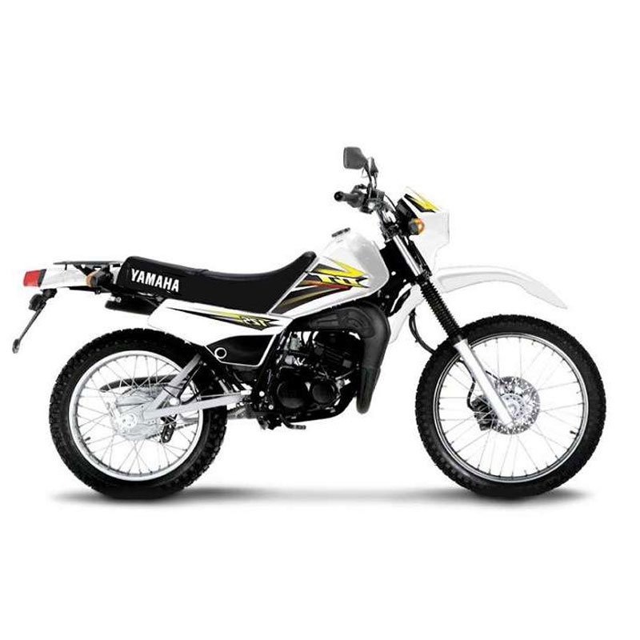

Todo Terreno
AG-200
L137,990.00
Con una potencia máxima de 14 HP, 5 velocidades y chasis compuesto por resistentes parrillas tubulares
DT 175
L116,990.00
La DT175 un modelo doble propósito la mas rápida de todas las motos de trabajo.
WR-155
L95,990.00

La todo terreno que te permitirá llevar esa sensación de adrenalina a otro nivel con su potente motor de 16.7HP, torque de 14.3 N-ms
XT 250
L148,990.00

La suspensión avanzada de viajes largos y la inyección de combustible moderna, permite realizar largos recorridos